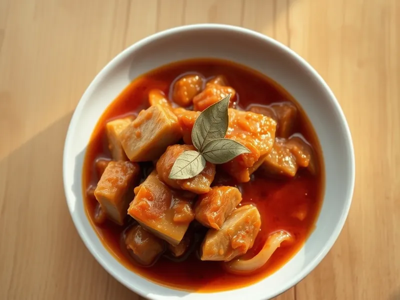

Фото: Иллюстрация ИИ, Cloudflare Workers AI
Поджарка из свинины с луком
Брусочки свинины, обжаренные с луком и потушенные в томатной подливе
30 мин3 порц.572 ккал на порциюБ 28 · Ж 46 · У 11Русская кухня
Продукты на 3 порц.
- Свинина500 г
- Лук репчатый2 шт
- Томатная паста1 ст. л.
- Мука пшеничная1 ст. л.
- Вода1 стак.
- Растительное масло2 ст. л.
- Соль1 ч. л.
- Перец чёрный молотый1 щеп.
- Лавровый лист по желанию1 шт
Как готовить
- Нарежьте свинину брусочками толщиной 1 см и длиной 4 см, лук полукольцами, 5 минут.
- Разогрейте масло на сильном огне. Обжарьте мясо в 2 приёма по 4 минуты до коричневой корочки.
- Верните всё мясо, добавьте лук и жарьте на среднем огне 4 минуты до мягкости.
- Всыпьте муку, перемешайте и жарьте 1 минуту, затем добавьте томатную пасту.
- Влейте воду, посолите, поперчите, положите лавровый лист. Тушите под крышкой на слабом огне 10 минут, пока мясо не станет мягким, а подлива густой.
Совет. Для поджарки лучше всего подходят свиная шея или лопатка: они остаются сочными. Подавайте с пюре, гречкой или макаронами.